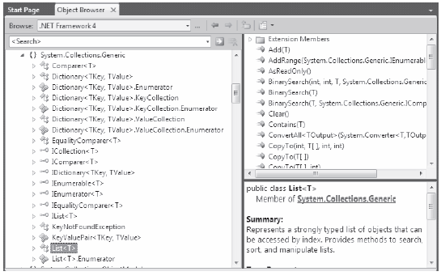

You can find generic classes, interfaces, structures, and delegates sprinkled throughout the .NET base class libraries, and these might be part of any .NET namespace.
Note Only classes, structures, interfaces, and delegates can be written generically; enum types cannot.
When you see a generic item listed in the .NET Framework 4.0 SDK documentation or the Visual Studio 2010 object browser, you will notice a pair of angled brackets with a letter or other token sandwiched within. Figure 10-1 shows a number of generic items in the System.Collections.Generic namespace, including the highlighted List<T> class.
Figure 10-1. Generic Items Supporting Type Parameters
Formally speaking, you call these tokens type parameters; however, in more user friendly terms, you can simply call them placeholders. You can read the symbol <T> as of T. Thus, you can read IEnumerable<T> as IEnumerable of T; or, to say it another way, an enumeration of type T.
Note The name of a type parameter (placeholder) is irrelevant, and it is up to the individual who created the generic item. However, typically T is used to represent types, TKey or K is used for keys, and TValue or V is used for values.
When you create a generic object, implement a generic interface, or invoke a generic member, it is up to you to supply a value to the type parameter. You’ll see many examples in this chapter, and throughout the remainder of the text. However, to set the stage, let’s see the basics of interacting with generic types and members.
When you create an instance of a generic class or structure, you specify the type parameter when you declare the variable and when you invoke the constructor. As you saw in the preceding code example, UseGenericList() defined two List<> objects:
// This List<> can only hold Person objects. List<Person> morePeople = new List<Person>();
You can read the preceding snippet as a List<> of T, where T is of type Person. Or, more simply, you can read it as a list of person objects. Once you specify the type parameter of a generic item, it cannot be changed (remember: generics are all about type safety). When you specify a type parameter for a generic class or structure, all occurrences of the placeholder(s) are now replaced with your supplied value.
If you were to view the full declaration of the generic List<T> class using the Visual Studio 2010 object browser, you would see that the placeholder T is used throughout the definition of the List<T> type. Here is a partial listing (note the items in bold):
// A partial listing of the List<T> class. namespace System.Collections.Generic { public class List<T> : IList<T>, ICollection<T>, IEnumerable<T>, IList, ICollection, IEnumerable { ... public void Add(T item); public ReadOnlyCollection<T> AsReadOnly(); public int BinarySearch(T item); public bool Contains(T item); public void CopyTo(T[] array); public int FindIndex(System.Predicate<T> match); public T FindLast(System.Predicate<T> match); public bool Remove(T item); public int RemoveAll(System.Predicate<T> match); public T[] ToArray(); public bool TrueForAll(System.Predicate<T> match); public T this[int index] { get; set; } } }
When you create a List<T> specifying Person objects, it is as if the List<T> type were defined as follows:
namespace System.Collections.Generic { public class List<Person> : IList<Person>, ICollection<Person>, IEnumerable<Person>, IList, ICollection, IEnumerable { ... public void Add(Person item); public ReadOnlyCollection<Person> AsReadOnly(); public int BinarySearch(Person item); public bool Contains(Person item); public void CopyTo(Person[] array); public int FindIndex(System.Predicate<Person> match); public Person FindLast(System.Predicate<Person> match); public bool Remove(Person item); public int RemoveAll(System.Predicate<Person> match); public Person[] ToArray(); public bool TrueForAll(System.Predicate<Person> match); public Person this[int index] { get; set; } } }
Of course, when you create a generic List<T> variable, the compiler does not literally create a brand new implementation of the List<T> class. Rather, it will address only the members of the generic type you actually invoke.
Note In the next chapter, you will learn about generic delegates, which will also require you to specify a type parameter when creating them.
It is fine for a non-generic class or structure to support a handful of generic members (e.g., methods and properties). In these cases, you would also need to specify the placeholder value at the time you invoke the method. For example, System.Array supports a several generic methods (which were added in .NET 2.0). Specifically, the static Sort() method now has a generic counterpart named Sort<T>(). Consider the following code snippet, where T is of type int:
int[] myInts = { 10, 4, 2, 33, 93 }; // Specify the placeholder to the generic // Sort<>() method. Array.Sort<int>(myInts); foreach (int i in myInts) { Console.WriteLine(i); }
It is common to implement generic interfaces when you building classes or structures that need to support various framework behaviors (e.g., cloning, sorting, and enumeration). In Chapter 9, you learned about a number of non-generic interfaces, such as IComparable, IEnumerable, IEnumerator, and IComparer. Recall that the non-generic IComparable interface was defined like this:
public interface IComparable { int CompareTo(object obj); }
In Chapter 9, you also implemented this interface on your Car class to enable sorting in a standard array. However, the code required a several runtime checks and casting operations because the parameter was a general System.Object:
public class Car : IComparable { ... // IComparable implementation. int IComparable.CompareTo(object obj) { Car temp = obj as Car; if (temp != null) { if (this.CarID > temp.CarID) return 1; if (this.CarID < temp.CarID) return -1; else return 0; } else throw new ArgumentException("Parameter is not a Car!"); } }
Now assume you use the generic counterpart of this interface:
public interface IComparable<T> { int CompareTo(T obj); }
In this case, your implementation code will be cleaned up considerably:
public class Car : IComparable<Car> { ... // IComparable<T> implementation. int IComparable<Car>.CompareTo(Car obj) { if (this.CarID > obj.CarID) return 1; if (this.CarID < obj.CarID) return -1; else return 0; } }
Here you do not need to check whether the incoming parameter is a Car because it can only be a Car! If someone were to pass in an incompatible data type, you would get a compile-time error.
Now that you have a better handle on how to interact with generic items, as well as the role of type parameters (aka placeholders), you’re ready to examine the classes and interfaces of the System.Collections.Generic namespace.